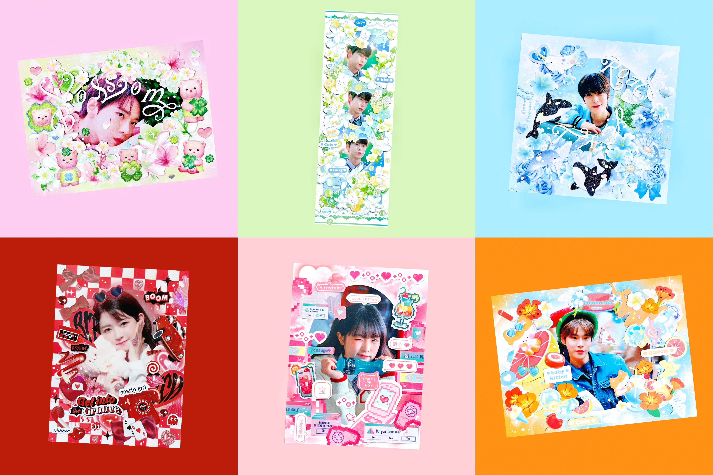

Jenni
Problem Introduction
咕卡 (Card-decoration) emerged as a kind of fan art. You can use many stickers to decorate photos of your idol and make it become more beautiful/stylized. It is not only a way for fans to express their love towards idols, but also a way to show their creativity and aesthetic. Card-decoration has become a kind of hobby that will take up a lot of people’s spare time.
What’s more, people are willing to spend money on buying stickers.
The super topic “只咕亿张” on Weibo has more than 111 thousand members and 77 thousand posts. The keyword “咕卡”has more than 500 thousand posts related on Xiaohongshu. The market size is rather large, and since there are always new people become someone’s fans and want to decorate their idol’s photos, it will continue expanding.
Sticker is the key element of card-decoration. The collocation of different stickers and their layout is of most card-decoration lovers’ great concern. People want more direct and easy access to relevant information; they also desire for content (such as the collocation options and samples) of high quality.
If you want to know the persona involved most and my analysis, you can click here to view my journals.